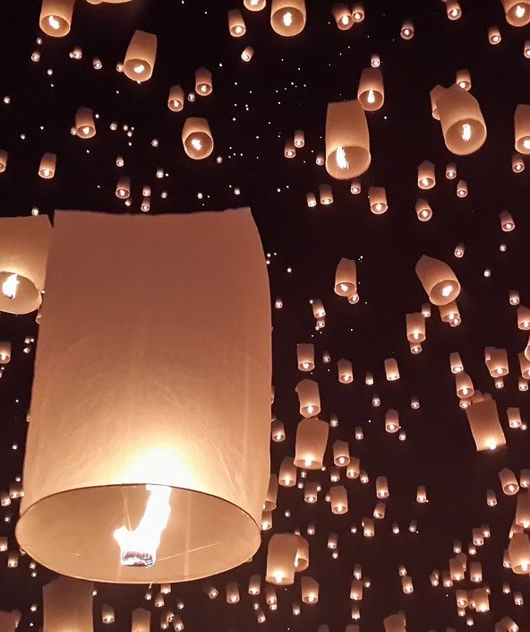
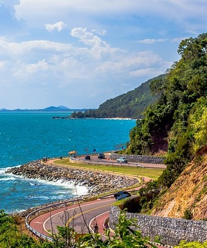
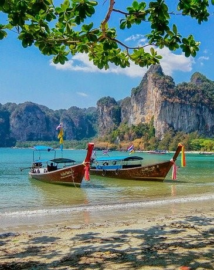

REGIONES DE TAILANDIA
Hay cinco regiones de Tailandia: Norte, Nordeste, Este, Central y del Sur, cada una geográficamente distinta de las demás. Cada provincia de Tailandia contiene sus propios atractivos culturales, históricos y naturales únicos, desde las montañas del norte (repletas de vida silvestre y el hogar de tribus exóticas) a los llanos centrales (denominados el «Plato de Arroz de Asia») a la meseta del noreste (se extiende hasta el río Mekong en la frontera con Laos) y las espectaculares playas e islas del sur (como Phuket, Krabi o Koh Samui, entre otras muchas). Tailandia es un destino para visitar en cualquier época del año.
A continuación verás la región y alguna que otra ciudad interesante la cual puedes visitar.


